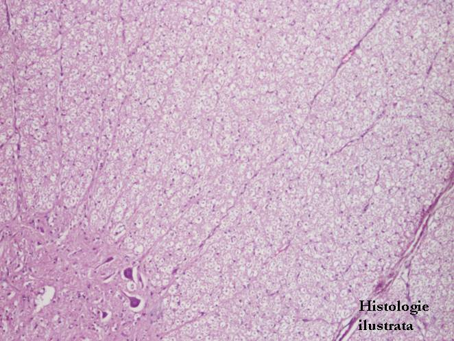
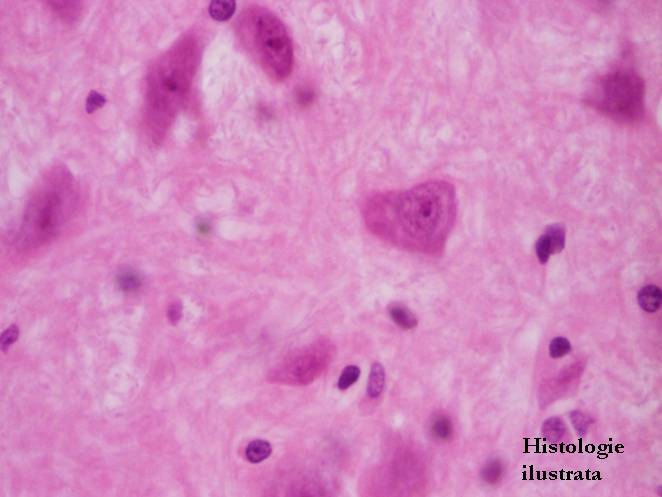
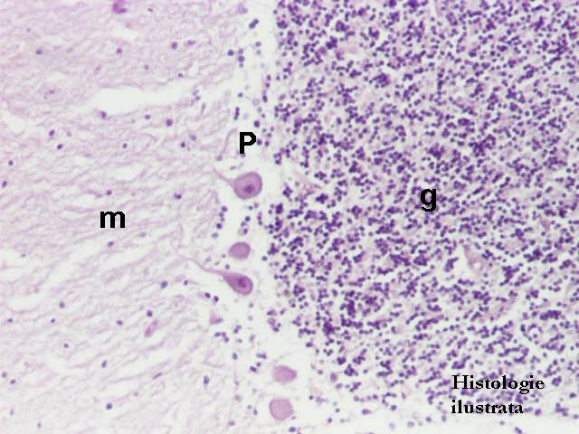
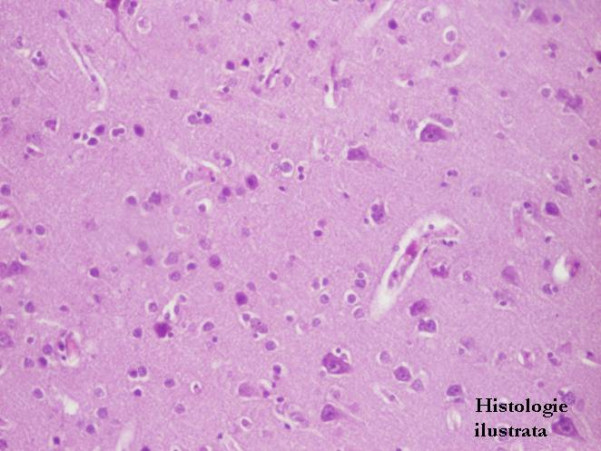

Cap.4 - Ţesutul nervos
4.2. Sistemul nervos central




Fig. 155 - Măduva spinării – substanţă albă (a.) şi substanţă cenuşie (c.), impregnaţie argentică x 40
Fig. 156 - Măduva spinării – substanţă albă şi substanţă cenuşie, H.E.x 40
Fig. 157 - Măduva spinării – neuroni multipolari din substanţa cenuşie,
H.E. X 100
Fig. 158 - Măduva spinării – neuroni multipolari, H.E. X 400





Fig. 159 - Cerebel – H.E. X 40
Fig. 160 - Strat granular (g.), stratul celulelor Purkinje (P.), strat molecular (m.) – cerebel, H.E. X 100
Fig. 161 - Celule Purkinje – cerebel, H.E. X 400
Fig. 162 - Scoarţă cerebrală – neuroni, impregnaţie argentică X 40




Fig. 163 - Scoarţă cerebrală – neuroni, H.E. X 200
Fig. 164 - Scoarţă cerebrală – neuroni, H.E.X 400
Fig. 165 - Neuroni şi celule gliale – scoarţă cerebrală, impregnaţie argentică X 200
Fig. 166 - Substanţa albă – emisferele cerebrale, H.E. X 100